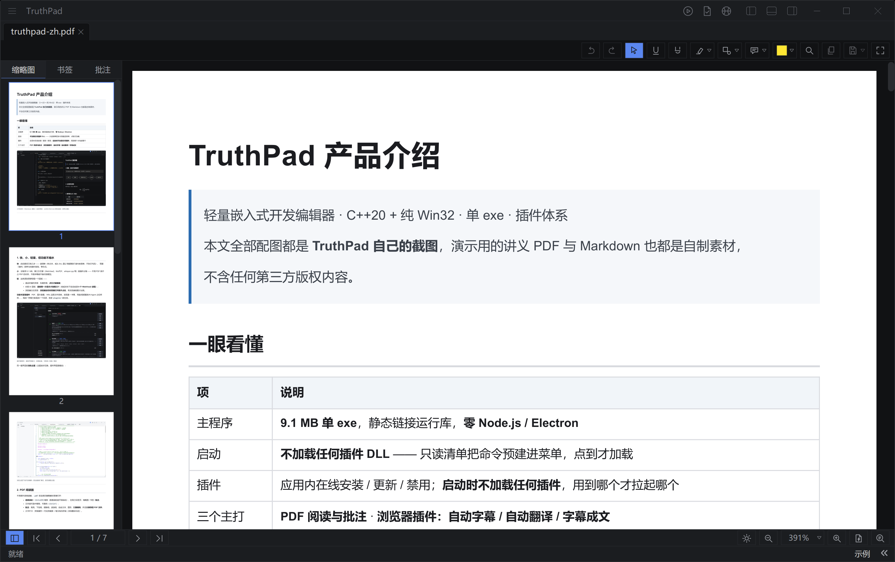
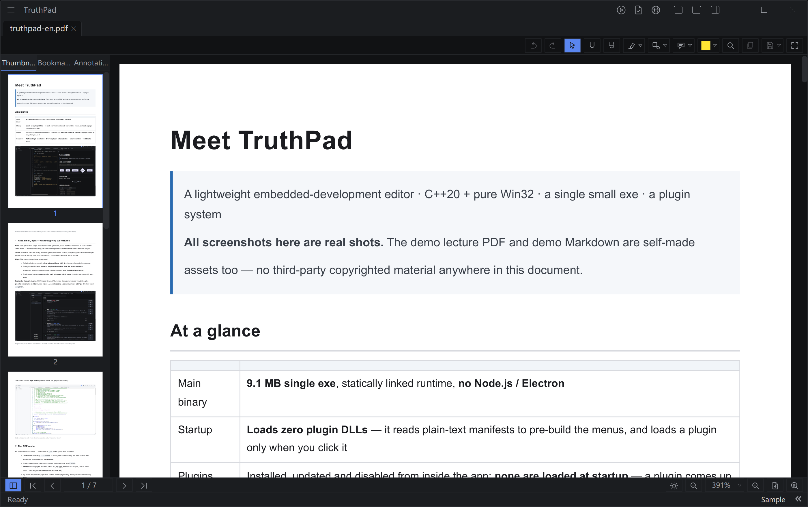
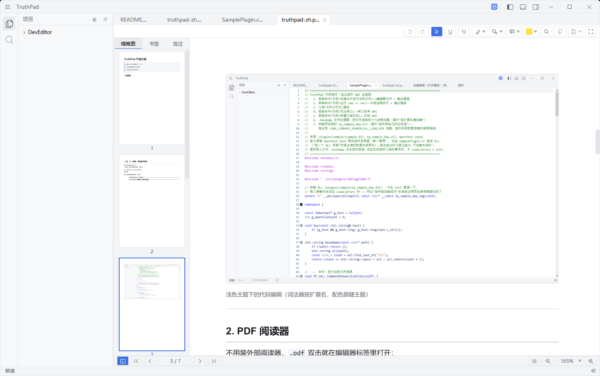
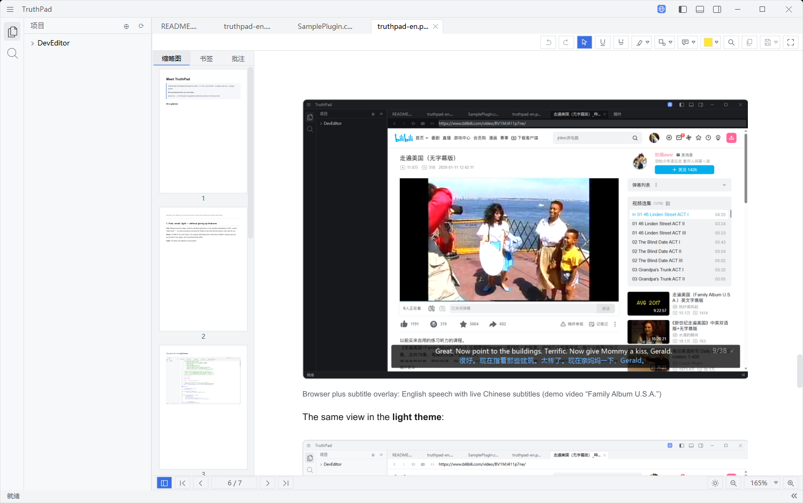

科研工作者Researchers
读论文、做批注、整理讲义 —— 一天要重复十遍。 Read, annotate, write up — ten times a day.
- 批注写回 PDF 文件本身：高亮 / 下划线 / 删除线 / 图形 / 文本框 / 指示批注都能存回文件，换个阅读器打开也看得见。文本框自动换行、高度自适应，选中后能像画图软件一样拖动位置、拖左右边改宽度。 Annotations saved into the file: highlight, underline, strike-out, shapes, text boxes and callouts are written back, visible in any reader. Text boxes wrap and auto-fit, and once selected can be dragged or resized by their left/right edges.
- 论文速读 / 精读：一键得到「核心贡献 / 实验与可信度 / 局限与坑 / 值不值得精读 / 复现检查清单」，精读再补 Mermaid 图与逐节审校；按文档 ID 缓存，同一篇不重复花 token。 Paper quick-read / deep-read: contribution, evidence, limits, verdict and a reproduction checklist — deep-read adds Mermaid figures and a per-section review. Cached per document, so the same paper never costs twice.
-
公式与图就是排版好的：Markdown 里写
\(…\)、\[…\]和mermaid代码块，预览里直接出公式与流程图。 Maths and diagrams, typeset: write\(…\),\[…\]or amermaidblock in Markdown and the preview renders formulas and flowcharts. - 一集课程 → 一篇讲师级讲义：本地 whisper 转写 + 三阶段成文，结尾自动带课后总结、学习检查清单、思考题、实验设计；写到一半关掉也能续。 A lecture becomes a long-form handout: local whisper plus a three-stage writer, ending with a summary, self-check list, questions and lab design; stop halfway and it resumes.



